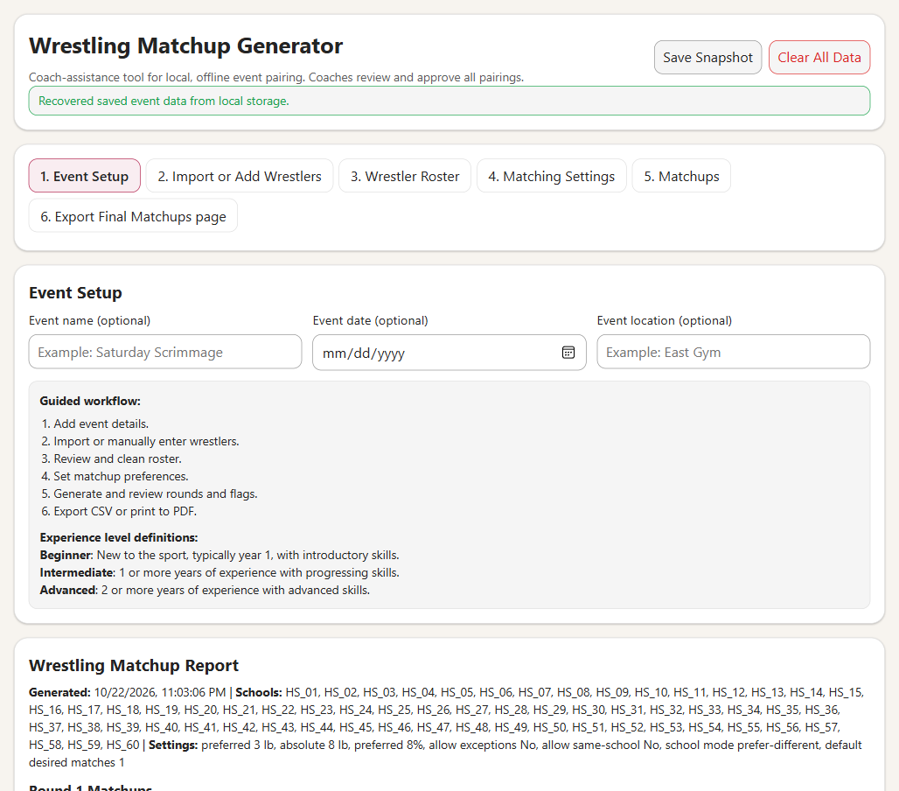
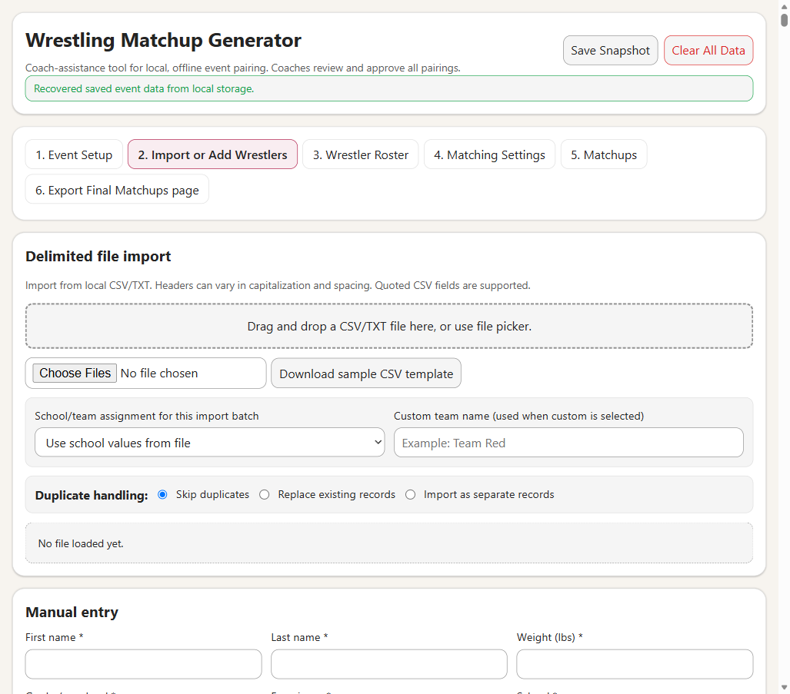
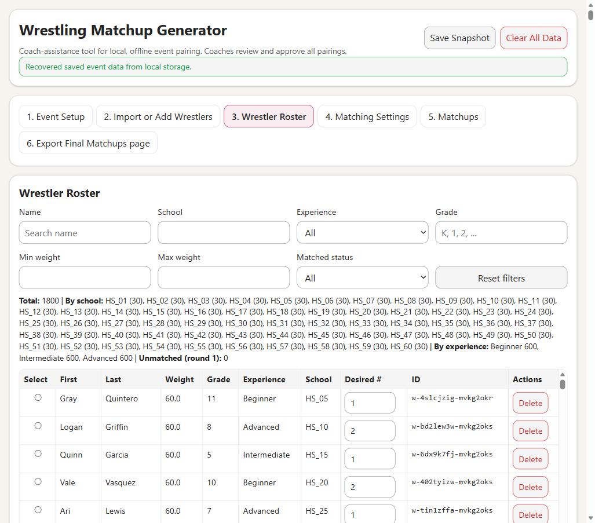
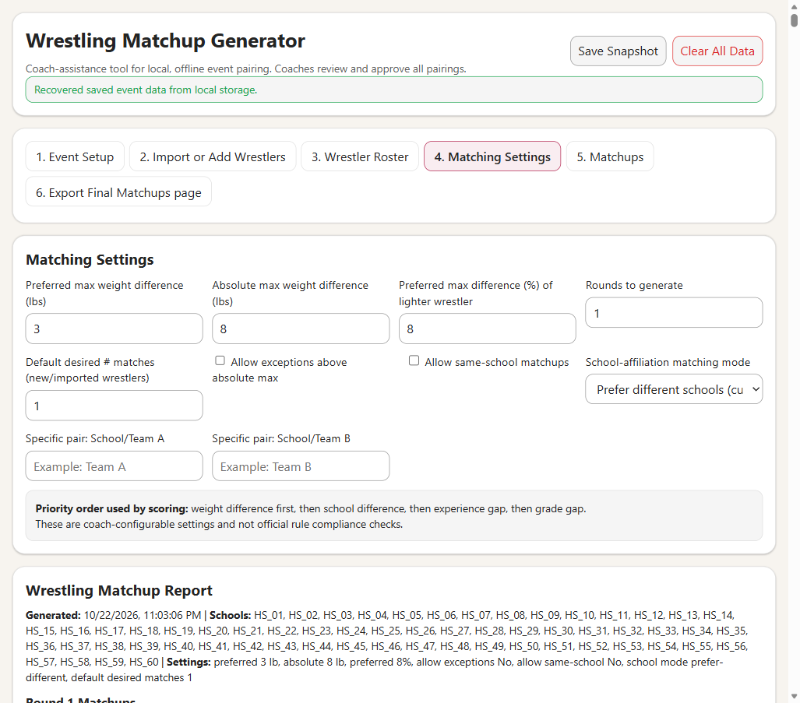
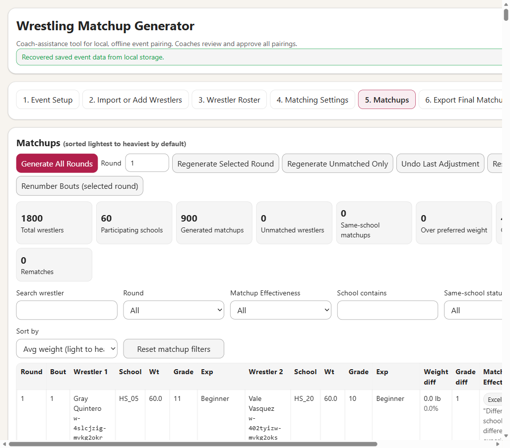
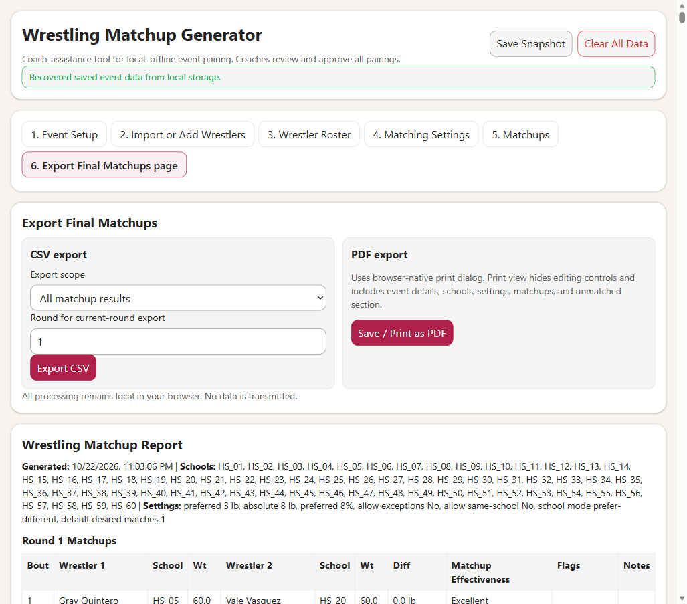

Wrestling Matchup Generator
Complete User Guide for coaches and event staff (no technical background required).
This utility is a coach-assistance tool. It helps you build practical matchups quickly, but coaches should always review and approve final pairings.
1) What this utility does
This app helps you:
- Import many teams at once from CSV/TXT files.
- Manually add or edit wrestlers quickly at the event table.
- Generate one or more matchup rounds using weight-first priorities.
- Review edge cases (same-school, large weight gap, rematch, etc.).
- Make manual changes without losing control of assignments.
- Export a final matchup report (CSV and printable PDF).
The app runs locally in your browser and does not require internet access once opened.
2) Quick start (5-minute setup)
- Open
wrestling-matchup-generator.html.
- Enter event name/date/location.
- Import rosters (one or multiple files), or add wrestlers manually.
- Review roster and fix any missing data.
- Set matching preferences (weight limits, rounds, school mode).
- Generate matchups, review flags, and make manual adjustments if needed.
- Export final results on the last tab.
Companion roster tool: If you need to build an initial roster from scratch, use
wrestling-roster-builder.html first. It is a separate tool that creates CSV files in the import format expected by this matchup generator.
3) Tab 1: Event Setup

Use this page to define basic event details and confirm experience-level definitions:
- Event name (optional)
- Event date (optional)
- Event location (optional)
Experience levels used throughout the app
- Beginner: New to the sport, typically year 1, introductory skills.
- Intermediate: 1+ years of experience, progressing skills.
- Advanced: 2+ years of experience, advanced skills.
4) Tab 2: Import or Add Wrestlers

You can import CSV files created by schools, spreadsheets, or the separate wrestling-roster-builder.html tool.
Required import columns
firstname,lastname,weight,agelevel,experience,school
Optional: desiredmatches (if omitted, the app uses the default desired-match setting).
Importing files (single or many at once)
- Click the file selector and choose one or more
.csv or .txt files.
- Choose how school/team should be assigned:
- Use school column from file
- Use filename as team name
- Force Team A/B/C/D
- Force custom team name
- Review import preview and validation messages.
- Set duplicate handling:
- Skip duplicates
- Replace existing
- Import separately
- Click Import Valid Rows.
Manual add motion
- Enter first name, last name, weight, grade, experience, school, and desired # matches.
- Click Add Wrestler.
- If any required field is missing or invalid, an inline error appears directly below the buttons.
5) Tab 3: Wrestler Roster

This page is your master list of wrestlers.
- Sort by any major field.
- Filter by weight range, grade, experience, school, name, and matched/unmatched state.
- Update Desired # directly in the table.
- Delete a roster row with the row-level Delete button.
Tip: Keep roster data clean here before generating. It reduces manual edits later.
6) Tab 4: Matching Settings

What each setting means
| Setting | How to use it |
|---|
| Preferred max weight difference (lbs) | Your normal target for close weight pairings. |
| Absolute max weight difference (lbs) | Hard cap unless exceptions are enabled. |
| Preferred max difference (%) | Weight gap relative to lighter wrestler. |
| Rounds to generate | How many rounds to create now. |
| Allow exceptions | Allows pairings above absolute max. |
| Allow same-school | Allows same-school pairings when needed. |
| School-affiliation matching mode | Prefer different schools, enforce Team A vs Team B, or ignore school. |
7) Tab 5: Matchups

This page is where you generate, review, and adjust pairings.
Core actions
- Generate All Rounds
- Regenerate Selected Round
- Regenerate Unmatched Only
- Lock / Unlock an individual matchup
- Undo Last Adjustment
Matchup table fields
- Round, Bout, both wrestler profiles, weight difference, grade difference
- Matchup Effectiveness (renamed for neutral coach-facing wording)
- Review flags and coach notes
8) Manual adjustment motions (step-by-step)
Motion A: Create Manual Matchup
- Select a round.
- Select Wrestler 1 and Wrestler 2 from dropdowns (full roster).
- Use the inline profile previews to confirm:
Name, Grade, Weight, Experience, School.
- Click Create Manual Matchup.
Motion B: Replace One Side of Matchup
- Select a round and a matchup.
- Choose whether you are replacing Wrestler 1 or Wrestler 2.
- Read the inline preview of that selected side (current wrestler details).
- Select replacement wrestler (matched or unmatched) from dropdown that shows:
Name | Weight | Grade | Experience | School | Matched/Unmatched.
- Click Replace Wrestler.
Motion C: Move one side to unmatched
- Find a matchup row.
- Click Move W1 unmatched or Move W2 unmatched.
- Recheck the unmatched section for alternatives.
9) Tab 6: Export Final Matchups page

CSV export
Choose an export scope and click Export CSV.
- All matchup results
- Current selected round
- Filtered results
- Unmatched list
- Complete roster
PDF export
Click Save / Print as PDF. The print view includes:
- Event metadata
- Schools represented
- Matching settings
- Round matchup tables
- Unmatched wrestler tables
10) Understanding review flags
| Flag | Meaning | Typical coach action |
|---|
| Same-school | Both wrestlers are from same school. | Keep only if needed for mat time or roster balance. |
| Weight over preferred | Above your preferred threshold. | Review for better alternative if available. |
| Weight over absolute | Above your absolute threshold. | Generally rework unless intentional exception. |
| Beginner vs Advanced | Largest experience gap pairing. | Careful review before approval. |
| Grade gap > 2 | Large grade separation. | Review context and alternatives. |
| Rematch | Prior opponent repeated in another round. | Accept only when unavoidable. |
11) FAQ
Q1) Can I import many schools at once?
Yes. Select multiple files in one import operation, then use school assignment mode (filename, file column, Team A/B/C/D, or custom).
Q2) What if import has errors?
The preview shows row-level issues. Valid rows can still be imported while invalid rows are skipped.
Q3) What does Lock do?
Lock keeps that matchup when you regenerate a selected round, so the app only rematches around it.
Q4) Why is a wrestler unmatched?
Usually due to odd headcount, constraints, or lack of compatible opponents. Check suggestions in the unmatched section.
Q5) Can I still do manual pairings?
Yes. Use Create Manual Matchup and Replace One Side motions in the Matchups tab.
Q6) Does this app send data to the internet?
No. All data processing is local in the browser for this utility.
Q7) I refreshed and lost work. Can I recover it?
Normally yes, because data is stored in browser local storage. Use the status banner and Save Snapshot behavior as confirmation.
Q8) How do I share final results with families/coaches?
Use CSV for spreadsheets and records, and PDF for easy read-only distribution.
File locations used in this guide
- App:
wrestling-matchup-generator.html
- Guide:
wrestling-matchup-generator-user-guide.html
- Screenshots:
wmg-01-setup.png through wmg-06-export.png